cloudDesk Case Study
cloudDesk is a cloud storage service that caters to teachers, students, and other professionals working in the educational field.
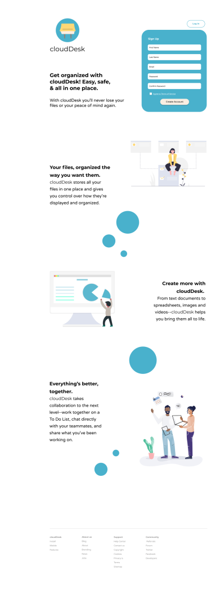My Roles
UX Design
Visual Design
Brand & Identity
Deliverables
User Survey | Competitive Analysis | Personas | User Stories & Flows | Paper Prototype | Wireframes | User Testing | Style Guide | Visual Design
Tools Used
Figma
InVision
Usability Hub
Challenge
Lesson plans, projects, new academic standards--the modern educator has an ever increasing workload and it can be easy to feel overwhelmed and disorganized. Working together with colleagues provides enormous benefits for both students and teachers but finding the time to do so is often challenging. Today’s educators need an easy way to stay organized and to collaborate with their colleagues in order to support their students’ academic success.
Solution
cloudDesk offers a familiar yet unique cloud storage experience where users can upload, create, and organize content. Perfect for busy educators or students, users can quickly and easily find files based on file type or via a convenient search bar. Where cloudDesk really excels however is in collaboration--beyond sharing files and folders, cloudDesk users can also chat directly with their teammates from within the site as well as work together on a collaborative to-do list. Everything's better together!
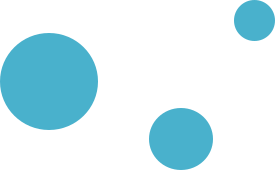Process
User Research Highlights
The results of my user survey confirmed that users do want to save, organize, and collaborate on content within the cloud. I learned that many users are concerned about the security of their data in the cloud and they have several ideas for enhancing collaboration, including the ability to chat and to work on a collaborative to do list.
43%
The results of my user survey confirmed that users do want to save, organize, and collaborate on content within the cloud. I learned that many users are concerned about the security of their data in the cloud and they have several ideas for enhancing collaboration, including the ability to chat and to work on a collaborative to do list.
88%
88% of respondents identified organization as their favorite feature of their cloud storage service.
53%
53% of respondents said they use the collaborative features of their cloud storage service either every day or a few times a week.
Competitive Analysis
I conducted a competitive analysis of Google Drive, Dropbox, and Pinterest--the three most used cloud storage services among my survey respondents. After mapping out onboarding, organizing, and saving content user flows for each of these competitors, I determined that Google Drive and Dropbox had simpler flows than Pinterest. Given this I decided to leverage aspects of these flows in my own designs.
User Personas
With the data from the user survey I constructed two user personas for this project. Mathew P. wants organizing his files in the cloud to be easier and is worried about data privacy. Luisa R. is interested in the collaborative capabilities of the cloud in order to boost her own and her team’s productivity.
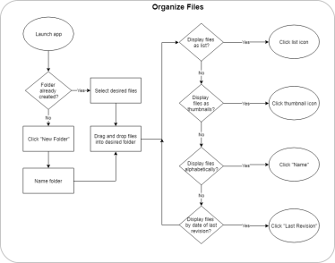User Flows and Stories
Based on the above research I wrote out 52 user stories with 12 high priority stories that reflected the MVP features identified in the user survey analysis. To address all of the high priority user stories. I based much of these user flows on Google Drive’s flows in order to leverage conventions my users are used to in order to create an easily understandable design.
Information Architecture
Wireframes
I designed the wireframes for this app based largely on Google Drive in order to keep the feel of the app familiar and easily understood by my users.


Usability Testing
I put my wireframes in front of several potential users to test my initial designs and gain needed insights on my user flows.
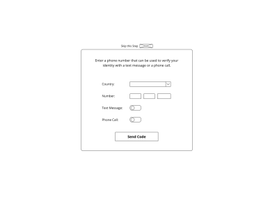Two Factor Authentication
Because I had identified managing privacy settings as a high priority user story I included this screen within my onboarding flow. However participants were confused by this screen during testing. In response to their feedback I removed this screen from onboarding and nested it within the Settings menu.
Collaborative Features
Originally I had included the collaborative features as links on the side menu of the dashboard. My test participants thought it was strange to have the links and the features on opposite sides of the screen. Based on this feedback I decided to include overlay buttons of these features on the right hand side.
Other Design Elements
Test participants also asked for a third column in the dashboard for the folder location of each file and for the dashboard’s side menu to be present on the new document screen. Participants stated that both would help with organization and orienting themselves within the app.
Visual Design
Branding
Given my survey results I decided to focus on the education field as our target market. With this in mind I felt that the brand should evoke the feeling of an encouraging and supportive classroom: someplace bright, happy, and sunny, yet relaxed and calm. With these emotions in mind I created a moodboard from which I pulled out the primary and secondary brand colors: a cool blue and a warm yellow.
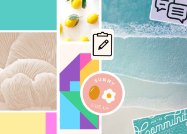HEX: #49B1CC
R: 73
G: 177
B: 204
HEX: #1E425E
R: 255
G: 216
B: 118
Logo Design
With the education field as my target market, I began sketching logo ideas that included images relating to clouds or to school. After some informal user testing, I landed on a simple drawing of a school desk within a circle. The desk is immediately recognizable to users and has a friendly, playful feel that coincides well with the overall brand approach. I chose the name cloudDesk in order to reference both our target market as well as clue users into what our product does.
HiFi MockUps and Preference Testing
With the previous usability test results and a style guide in hand I set about putting together high fidelity mockups of the cloudDesk site. In order to refine my designs I did a few rounds of preference testing.
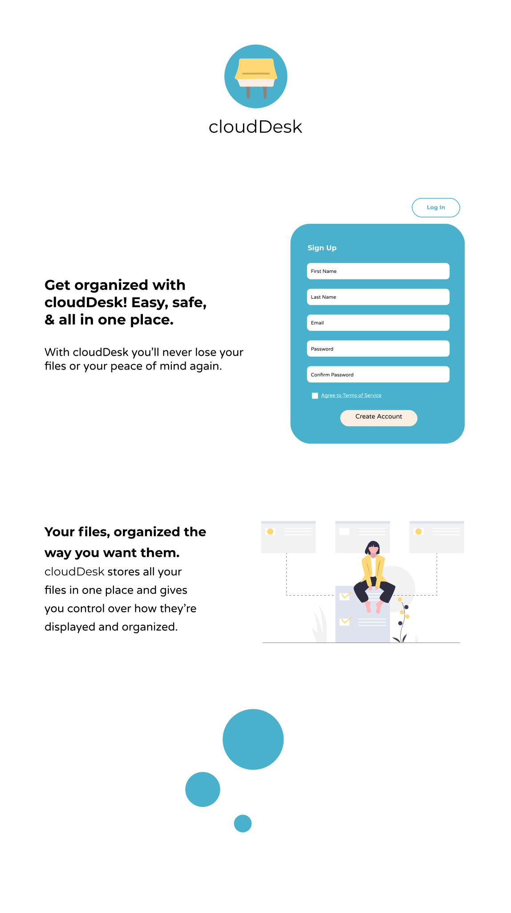 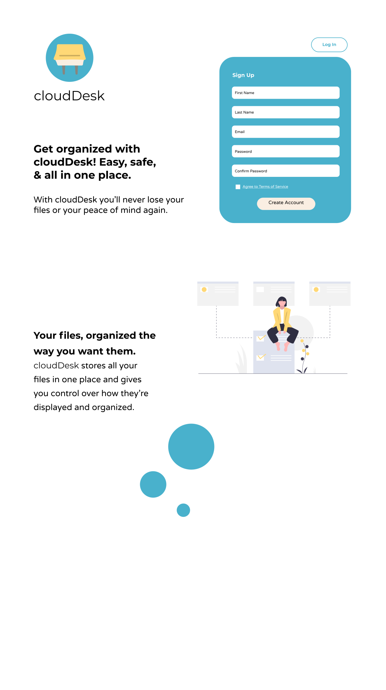Originally I placed the cloudDesk logo at the top of the homepage. However after conducting some A/B testing, 62% of respondents preferred to have the logo in the top left corner of the screen.
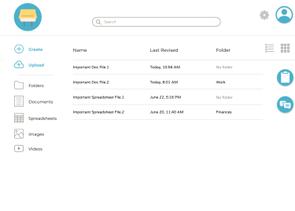 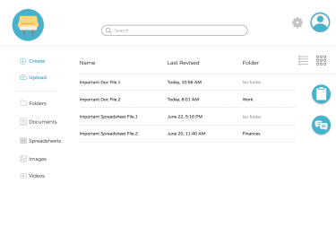I had also originally designed the dashboard’s side menu with large icons next to each of the menu options. When given a choice between that design or one with much smaller icons, 67% of respondents preferred the smaller icons.
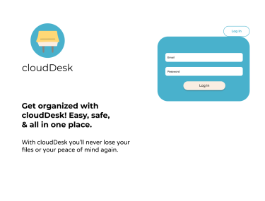 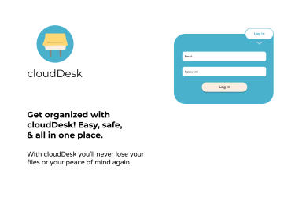I had originally designed the login window to drop down right below the “Log In” button when clicked. Given the choice between that design or one that included a white carrot arrow pointing downward from the “Log In” button, 67% of respondents preferred this second design. Given these results, I made the appropriate changes to the design of these three elements.
Final Usability Testing
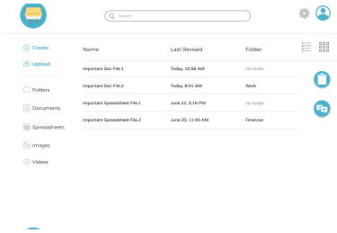 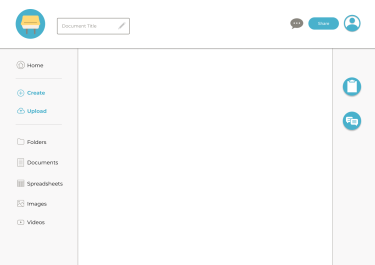Some suggestions participants made in order to improve my designs focused on the New Document scree. They suggested:
- Including a back button, in order to navigate back to the dashboard from a document screen
- Decreasing the size of the profile icon to de-emphasize it and,
- To change “New Document” to “Document Title” to make it clear that that input field is editable
Conclusion
What Worked?
The branding I designed for cloudDesk was quite successful. During usability testing participants responded positively to the branding and often expressed feeling the brand emotions that I was trying to communicate
via
my design choices. For example, I wanted the cloudDesk brand to feel happy and bright yet calm and relaxed. Users during testing stated that the color choices made them feel “calm” and that the use of circle shapes (on the landing page) had
a
playful feel. This is exactly how I wanted users to react to the cloudDesk brand.
What Didn’t Work?
A major challenge I faced while working on this project was including unique functionality focused on the identified target
market. Due to my survey results I had early on identified teachers, students, and anyone else working in the education field as the target market for cloudDesk. However, as the project progressed there wasn’t much about cloudDesk (beyond
its
branding) that clearly identified it as a product aimed at the education field. I included two collaborative features to address this challenge and to set cloudDesk apart from its competition: a collaborative to-do list and a chat feature.
While I do think these features would be of use to teachers and students, I still think more could be done with this project to clearly establish the education field as its target market. If I were to continue working on this problem, my
first step would be another round of user research to figure out the features students and teachers would actually want to have in their cloud storage service.
Key Takeaways
This project truly underscored for me the vital importance of user research throughout the design process. Whenever I felt stuck or unsure of how to proceed, a round of preference or usability tests would immediately shed some light and point me in the right direction. Moving forward I hope to conduct even more user research in future projects in order to create truly human-centered designs.
Let's Connect!